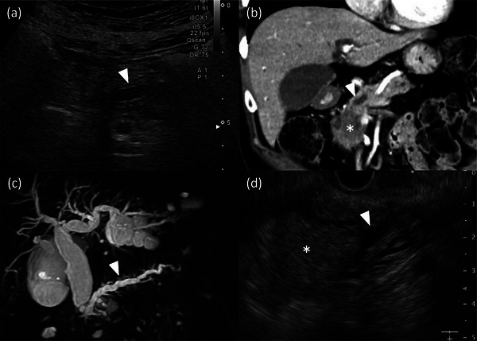
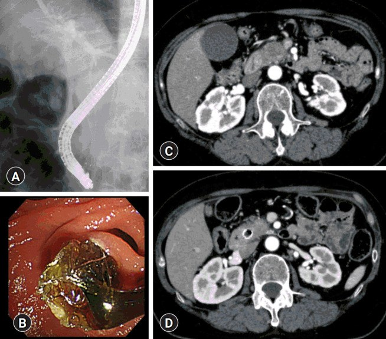
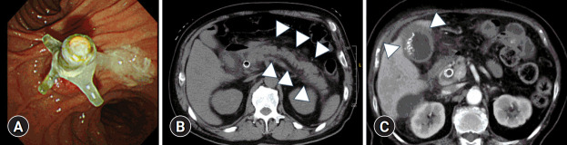

925 — Dẫn lưu đường mật trước phẫu thuật (preoperative biliary drainage — PBD): ai cần, chọn đường nào, chờ bao lâu & biến chứng trên CT
Tags: pattern:ong-mat-gian pattern:double-duct vung:duong-mat vung:tuy protocol:CT-4-thi protocol:MRCP protocol:PBD
Mức chắc chắn (certainty): tổng hợp y văn (literature synthesis) — bài tự biên từ các nghiên cứu mở 2023–2026 (PMC12500813, PMC13212022, PMC13525688, PMC10508238, PMC12604501, PMC11405119, PMC10293702, PMC12933553, PMC13212015) + 3 ca nguyên văn gắn ảnh. Số liệu trích trực tiếp từ nguồn; chỗ chưa có số ghi "chưa rõ".
1. Tổng quan bệnh học – cơ chế hình ảnh
- Vì sao tắc mật gây hại (không chỉ là "vàng da"): áp lực trong ống mật tăng → mối nối chặt (tight junction) của tế bào ống mật mở → dịch mật (muối mật, endotoxin đường ruột) vào máu → nhiễm khuẩn đường mật, rối loạn đông máu do thiếu vitamin K, suy dinh dưỡng (kém hấp thu mỡ), tổn thương thận (hepatorenal). Vì vậy "mở đường mật" chỉ có lợi khi có biến chứng hoặc mức vàng da đủ nặng — nếu không, chính thủ thuật lại thêm nhiễm khuẩn.
- Ngưỡng định lượng (bắt buộc — đây là toàn bộ bài học):
- Bilirubin toàn phần (TB) ≥ 14,6 mg/dL (250 µmol/L) là yếu tố tiên lượng độc lập của tử vong 90 ngày sau cắt khối tá tụy (pancreaticoduodenectomy — PD): 13,3% ở nhóm không dẫn lưu + TB cao, so với 2,9–5,7% ở các nhóm còn lại; biến chứng chung 29,0% vs 12,8–20,7% (PMC12500813).
- Ngưỡng chỉ định của đồng thuận châu Á – Thái Bình Dương 2024 (bệnh lý rốn gan): PBD khi viêm đường mật (cholangitis), vàng da kéo dài, mổ phải hoãn (chờ nút mạch cửa xơ hóa gan lành — PVE, hoặc albumin < 3 g/dL), hoặc TB ≥ 15 mg/dL (≈ 257 µmol/L) (PMC11405119).
- Đích sau dẫn lưu: hạ TB xuống < 151,8 µmol/L (≈ 8,9 mg/dL) thì biến chứng nặng giảm có ý nghĩa (P = 0,047); nhóm vàng da nhẹ không được lợi từ PBD thường quy (PMC12604501).
- Vàng da "trung bình" 10–15 mg/dL: PBD không lợi — nhiễm trùng vết mổ (SSI) 70,8% vs 18,7%, cấy mật dương 75% vs 25%, chi phí kháng sinh +50% (PMC13212022).
- Gộp 6 RCT (PBD so với mổ thẳng): không khác biệt tử vong, nhưng biến chứng nặng tăng: RR 1,65 (KTC 95%: 1,21–2,25) (PMC10508238).
- TẠI SAO đặt stent lại gây nhiễm khuẩn (cơ chế then chốt): stent đi qua cơ vòng Oddi → mất hàng rào một chiều → vi khuẩn đường ruột trào ngược, màng sinh học (biofilm) bám stent, ứ mật từng đợt khi stent bị bùn che. Hệ quả đo được: cấy mật trong mổ dương 75,8% vs 5,6% (có stent vs không), đa loài 80,8%, Enterobacterales 43,6%, Enterococcus 35,7%, Candida 19,2%; thời gian chờ mổ dài hơn (51,2 vs 23,8 ngày) (PMC13525688).
- TẠI SAO hình ảnh trông như vậy:
- Mật là dịch nước (0–20 HU) → ống mật chỉ thấy khi giãn; ống mật chủ (common bile duct — CBD) bình thường ≤ 8 mm (sau cắt túi mật có thể tới 10 mm), ống trong gan > 2 mm là giãn.
- MRCP (T2 3D): mật tĩnh, giàu proton tự do → tín hiệu rất sáng, không cần thuốc cản quang; dựng được "bản đồ" đường mật và mức tắc.
- Sau đặt stent trên CT: kim loại > 1.000 HU + giả ảnh dải (streak artifact); khí trong đường mật (pneumobilia) −200 đến −1.000 HU; dày thành ống mật + thâm nhiễm quanh ống = viêm đường mật.
- Vì sao PBD làm mổ khó hơn: stent gây xơ hóa quanh ống mật chủ (pericholedochal fibrosis) — đã hình thành rõ từ ngày thứ 6, không tăng thêm theo thời gian lưu stent; độ dày thành ống phân biệt ống đã dẫn lưu với ống không (AUC 0,886) (PMC13212015).
2. Mẫu hình + chẩn đoán phân biệt theo vị trí (gamut)
Mẫu hình 1 — "giãn đường mật": dùng MỨC TẮC để chọn đường dẫn lưu.
- Tắc đoạn xa (CBD/đầu tụy/bóng Vater): giãn cả ống trong gan và CBD đến sát đầu tụy, kèm giãn ống tụy chính = dấu ống đôi (double duct sign) → u đầu tụy, ung thư bóng Vater, ung thư ống mật xa, viêm tụy mạn, viêm tụy tự miễn IgG4.
- Tắc rốn gan (hilar/Klatskin): giãn ống trong gan hai bên nhưng CBD xẹp ("hai cây không nối"), có thể teo thùy → ung thư đường mật rốn gan, ung thư túi mật xâm lấn rốn, di căn hạch rốn.
- Tắc trong gan: giãn từng đoạn/khu trú → sỏi trong gan (viêm đường mật mủ tái phát), PSC, bệnh Caroli, u trong gan.
- Quy tắc chọn đường: tắc xa + giải phẫu bình thường → ERCP (qua nhú Vater); thất bại ERCP, tắc rốn gan, thùy gan cần dẫn lưu nằm xa nhú, hoặc có ruột nối mật–ruột → PTBD hoặc EUS-BD (dẫn lưu xuyên gan/xuyên dạ dày); chỉ dẫn lưu phần gan sẽ còn lại (future liver remnant — FLR) ở ung thư rốn gan, tránh chọc vào thùy sẽ cắt.
Mẫu hình 2 — "biến chứng sau dẫn lưu" trên CT (đọc sau mỗi lần đặt stent).
- Viêm tụy sau ERCP (post-ERCP pancreatitis — PEP): tụy to, thâm nhiễm/dịch quanh tụy, tăng amylase > 3 lần giới hạn trên sau 24 giờ.
- Viêm đường mật do stent tắc: dày thành ống mật, pneumobilia, ổ áp-xe gan; sốt + vàng da tái phát.
- Viêm túi mật do stent che ống túi mật: thành túi mật > 3 mm, dịch quanh túi mật, túi mật căng.
- Di trú stent / thủng tá tràng / máu trong đường mật (hemobilia) — biến chứng nặng, cần CTA/ERCP cấp.
Mnemonic "DRAIN": Distal hay hilar (mức tắc), Route (ERCP/PTBD/EUS-BD), Antibiotic (khi có cholangitis), Interval (chờ bao lâu), Nutrition (albumin, vitamin K).
3. Bảng so sánh phân biệt (ma trận đối chiếu)
| Thực thể (entity) | Hình ảnh điển hình | Chốt vào (rule-in) | Chốt loại (rule-out) | Gợi ý xác nhận |
|---|---|---|---|---|
| Tắc đoạn xa do u (u đầu tụy/bóng Vater) | CBD + ống tụy chính giãn tới sát đầu tụy (double duct sign), khối giảm tỉ trọng thì tụy, cắt cụt kiểu "vai" | Giãn cả hai ống + thấy khối ở đầu tụy + cắt cụt đột ngột | Chỉ giãn CBD, không giãn ống tụy, có sỏi → nghĩ nguyên nhân lành | CT 4 thì lát ≤ 1 mm + EUS-FNA; MRCP |
| Tắc rốn gan (Klatskin) | Giãn ống trong gan hai bên, CBD xẹp, teo thùy, có thể xâm lấn nhánh cửa | "Hai cây không nối" + khối rốn gan + teo thùy | CBD cũng giãn tới Vater → tắc xa, không phải rốn gan | MRCP + CT động học; chỉ dẫn lưu FLR |
| Sỏi ống mật chủ | Hình "bia bắn" (target sign) trong lòng ống, đầu dưới hình chén (meniscus), không có khối | Sỏi thấy trực tiếp + ống giãn không tương xứng với khối | Có khối đặc bắt thuốc thì loại sỏi đơn thuần | Siêu âm/EUS; MRCP; ERCP lấy sỏi |
| Viêm tụy tự miễn (IgG4) | Tụy "xúc xích", bao quanh viền giảm tỉ trọng, hẹp ống mật đoạn dài, nhẵn, không có khối | Hẹp dài + tụy to đều + IgG4 > 135 mg/dL | Hẹp ngắn bờ vai + khối → nghĩ ác tính | IgG4, đáp ứng corticoid |
| Viêm đường mật do stent tắc | Dày thành ống mật, pneumobilia, ổ dịch/áp-xe quanh rốn gan, stent có thể đầy bùn | Sốt + vàng da tái phát sau đặt stent + dày thành ống | Không sốt, stent thông, bilirubin giảm đều → không phải | Cấy máu/mật; thay stent |
| Viêm tụy sau ERCP (PEP) | Tụy to, dịch/thâm nhiễm quanh tụy (dấu đầu mũi tên trong ảnh Fig. 3B), có thể hoại tử | Đau bụng sau thủ thuật + amylase > 3× ULN + dịch quanh tụy | Dịch quanh tụy trước thủ thuật → do u/viêm tụy nền | Amylase/lipase 24 giờ; CT nếu nặng |
| Viêm túi mật sau stent (SEMS che ống túi mật) | Thành túi mật > 3 mm, dịch quanh, túi mật căng, có stent trong CBD | Stent kim loại + đau hạ sườn phải + thành túi mật dày | Không stent, không đau → loại | Siêu âm; chọc hút túi mật nếu không mổ được |
4. Protocol chụp + hệ thống ngưỡng + thuật toán
Trước khi quyết định dẫn lưu — chụp gì để không "đặt stent rồi mới biết không mổ được":
- CT bụng 4 thì, lát ≤ 1 mm: không tiêm, thì tụy 40–50 giây, thì cửa 65–70 giây, thì muộn; đánh giá khả năng mổ (resectability) theo tiếp giáp SMA/SMV/động mạch gan và di căn TRƯỚC khi đặt stent — vì giả ảnh kim loại làm sai phân giai đoạn mạch máu.
- MRCP (T2 3D) khi cần bản đồ mức tắc, phân biệt hẹp lành/ác, hoặc bệnh nhân không dùng được cản quang.
- EUS khi CT/MRCP nghi ngờ nhưng chưa có mô: EUS-FNA khối đầu tụy; EUS-BD (HGS/CDS) khi ERCP thất bại.
- Xét nghiệm trước thủ thuật: bilirubin/ALP, CA 19-9, đông máu (INR), albumin, cấy máu nếu sốt.
Ba câu hỏi trước khi đặt stent (dùng đúng ngưỡng):
flowchart TD
A[Vàng da tắc mật + giãn đường mật] --> B{Có viêm đường mật / sốt / đau? / TB >= 15 mg/dL? / albumin < 3 g/dL? / cần hóa trị tân bổ trợ?}
B -->|Không| C[KHÔNG dẫn lưu thường quy: mổ thẳng sau khi đánh giá mổ được]
B -->|Có| D{Mức tắc ở đâu?}
D -->|Đoạn xa - ERCP được| E[ERCP: SEMS nếu chờ dài / tân bổ trợ; nhựa nếu chờ ngắn]
D -->|Rốn gan / ERCP thất bại| F[PTBD hoặc EUS-BD: CHỈ dẫn lưu phần gan còn lại FLR]
E --> G[Đích: TB < 8,9 mg/dL; chờ >= 4 tuần nếu ung thư đường mật, tránh < 2 tuần]
F --> G
G --> H{Sau dẫn lưu có sốt / đau / bilirubin không giảm?}
H -->|Có| I[CT: viêm tụy? viêm đường mật? viêm túi mật? di trú stent?]
H -->|Không| J[Mổ theo kế hoạch; không để stent quá lâu]
Chọn stent (số liệu):
- Stent kim loại tự bung có màng (FCSEMS) khi chờ mổ dài/tân bổ trợ: tái can thiệp RR 0,42 (0,25–0,72), tắc stent OR 0,29 (0,15–0,57) so với stent nhựa (PMC10508238); tắc tái phát 0% vs 25%, stent nhựa thông trung bình 126 ngày (PMC10293702).
- Stent nhựa khi chờ ngắn (< 2–3 tuần) hoặc khi cần tháo nhanh; nhược điểm: tắc → viêm đường mật (ảnh Fig. 3A).
- PEP sau PBD: 20% (FCSEMS) vs 8,2% (nhựa) — khác biệt không có ý nghĩa trong cohort nhỏ; yếu tố nguy cơ: nữ (OR 5,68) và không giãn ống tụy chính (OR 4,91) (PMC10293702).
Thời điểm mổ sau dẫn lưu (interval):
- ≥ 4 tuần ở ung thư đường mật giảm nhiễm khuẩn bệnh viện (aRR 0,292; KTC 95% 0,100–0,853); ≤ 2 tuần ở PD robot tăng nhiễm khuẩn (aRR 3,058) (PMC10979617).
- Nhưng đừng chờ quá lâu: xơ hóa quanh ống mật đã rõ từ ngày 6, cộng thêm bùn/stent tắc và khuẩn trú — thời gian chờ trong nghiên cứu có stent là 51,2 ngày so với 23,8 ngày không stent (PMC13525688).
5. Biến thể bình thường và cạm bẫy
- Cạm bẫy số 1 — đọc CT sau khi đã đặt stent để phân giai đoạn: giả ảnh kim loại và viêm quanh ống bắt chước xâm lấn mạch; luôn dùng CT/MR trước stent để đánh giá mổ được.
- Khí trong đường mật (pneumobilia) sau ERCP là bình thường vài ngày; nhưng khí lan ra ngoại vi tới sát bao gan + thâm nhiễm = khí tĩnh mạch cửa (portal venous gas) — dấu hiệu thiếu máu/hoại tử ruột, không phải "khí do thủ thuật".
- Vàng da giảm không đồng nghĩa hết nhiễm trùng: bilirubin có thể giảm trong khi áp-xe gan/viêm đường mật ứ đọng tiến triển; đọc thêm ALP, CRP, bạch cầu và tìm ổ dịch.
- Dẫn lưu "cả hai bên" ở ung thư rốn gan là sai lầm thường gặp: có thể gây viêm đường mật ở thùy không dẫn lưu (thuốc cản quang đẩy vi khuẩn) và làm teo thêm FLR — chỉ dẫn lưu phần gan sẽ giữ lại (PMC11405119).
- Bilirubin 10–15 mg/dL không phải "chỉ định mặc định": PBD ở nhóm này tăng SSI, nhiễm bẩn mật, chi phí mà không giảm biến chứng (PMC13212022).
- Pitfall "satisfaction of search": thấy u đầu tụy rồi dừng → bỏ di căn gan/phúc mạc, hạch xa, huyết khối tĩnh mạch cửa — những thứ đổi hoàn toàn quyết định (mổ triệt căn hay chỉ dẫn lưu giảm nhẹ).
- Ống mật giãn sau cắt túi mật (tới 10 mm) là biến thể bình thường, đừng gán "tắc" nếu không có cắt cụt, không tăng ALP.
6. Tự lượng giá — Blind Quiz ngay trên trang tĩnh
Ca 1 — Nam 68 tuổi, vàng da tăng dần, sụt cân. Siêu âm (a), CT thì tụy (b), MRCP (c), EUS (d).

- Gợi ý lâm sàng: không sốt, không đau; bilirubin 16 mg/dL, albumin 3,4 g/dL.
- Câu hỏi: (1) Dấu hiệu chính là gì? (2) Tắc ở mức nào? (3) Có chỉ định dẫn lưu trước mổ không, và nếu có thì đích bilirubin là bao nhiêu?
Bấm để hiện đáp án (findings + chẩn đoán)
- Findings: (a) siêu âm: ống tụy chính giãn (đầu mũi tên); (b) CT: khối giảm tỉ trọng ở đầu tụy (dấu *) làm hẹp ống tụy, ống tụy giãn phía sau (đầu mũi tên); (c) MRCP: ống tụy chính giãn rõ; (d) EUS: khối (dấu *) + ống giãn (đầu mũi tên).
- Chẩn đoán: u đầu tụy gây tắc ống tụy (kèm giãn đường mật trên lâm sàng = double duct sign).
- Có dẫn lưu không: CÓ — bilirubin 16 mg/dL ≥ 15 mg/dL, albumin 3,4 g/dL, và cần chờ đánh giá/mổ. Đích TB < 8,9 mg/dL (151,8 µmol/L), chờ ≥ 4 tuần nếu có tân bổ trợ.
- Vì sao không mổ thẳng: TB ≥ 14,6 mg/dL làm tử vong 90 ngày 13,3% nếu không dẫn lưu (PMC12500813).
- Nguồn ảnh: Kozakai F et al., DEN Open 2024, PMC10293702 Fig. 1 — CC BY 4.0.
Ca 2 — Cùng bệnh nhân sau đặt stent kim loại, chụp kiểm tra trước hóa trị. Fluoroscopy (A), nội soi (B), CT (C, D).

- Gợi ý: không sốt, bilirubin giảm từ 16 xuống 3,2 mg/dL.
- Câu hỏi: (1) Stent nằm ở đâu, có đúng vị trí? (2) Trên CT, cấu trúc tăng tỉ trọng trong CBD là gì và gây cạm bẫy gì? (3) Đánh giá khối u trên CT này có đáng tin không?
Bấm để hiện đáp án (findings + chẩn đoán)
- Findings: (A) fluoroscopy: stent kim loại phủ màng (FCSEMS) bắc qua chỗ hẹp, đầu dưới ở nhú Vater; (B) nội soi: đầu stent nhìn thấy ở nhú; (C) CT: khối đầu tụy trước hóa trị; (D) CT sau hóa trị: khối nhỏ lại, stent tăng tỉ trọng mạnh trong lòng CBD.
- Chẩn đoán: PBD bằng FCSEMS đúng vị trí; đáp ứng với hóa trị tân bổ trợ.
- Cạm bẫy: stent kim loại tạo giả ảnh dải (streak) và che mất mặt phẳng tiếp giáp mạch máu → không dùng CT sau stent để kết luận xâm lấn SMA/SMV; dùng CT/MR trước stent.
- Nguồn ảnh: Tamura T et al., Clin Endosc 2025, PMC12933553 Fig. 1 — CC BY-NC 4.0.
Ca 3 — Bệnh nhân sau PBD 5 ngày, sốt 38,8 °C, đau bụng lan sau lưng, amylase tăng 5 lần. Nội soi (A), CT (B), CT (C).

- Gợi ý: stent nhựa đặt 4 tuần trước (A); hoặc stent kim loại đặt 24 giờ trước (B, C).
- Câu hỏi: (1) Ba ổ biến chứng trên ảnh là gì? (2) Dấu hiệu CT nào phân biệt viêm tụy sau ERCP với u tiến triển? (3) Xử trí từng ổ?
Bấm để hiện đáp án (findings + chẩn đoán)
- Findings: (A) nội soi: stent nhựa đầy bùn/mủ trong lòng → viêm đường mật do tắc stent; (B) CT: dịch quanh tụy (đầu mũi tên) → viêm tụy cấp sau ERCP; (C) CT: thành túi mật dày + thâm nhiễm quanh túi mật (đầu mũi tên) → viêm túi mật cấp do SEMS che ống túi mật.
- Chẩn đoán: ba biến chứng kinh điển của PBD — cholangitis do stent tắc, PEP, cholecystitis.
- Phân biệt với u tiến triển: PEP có dịch/thâm nhiễm quanh tụy + amylase > 3× ULN sau thủ thuật; u tiến triển có khối bắt thuốc thì tụy và không tăng amylase.
- Xử trí: (A) thay stent + kháng sinh; (B) nhịn ăn, dịch, giảm đau, theo dõi hoại tử; (C) kháng sinh ± chọc hút túi mật/cắt túi mật nếu nặng.
- Nguồn ảnh: Tamura T et al., Clin Endosc 2025, PMC12933553 Fig. 3 — CC BY-NC 4.0.
Bài liên quan chéo
- 100 – Tổng quan hệ Bụng
- 131 – Tắc mật: tiếp cận hình ảnh
- 102 – Viêm túi mật & viêm tụy sau stent mật/ERCP
- 137 – Theo dõi stent & dẫn lưu đường mật (tắc, nhiễm trùng)
- 107 – MRCP & gadoxetic acid thì gan–mật
- 910 – Dẫn lưu áp-xe & đường mật qua da (PTBD)
- 179 – Hoại tử ống mật & cholangiopathy thiếu máu sau can thiệp u gan
- 135 – Viêm tụy cấp (Atlanta)
- 930 – TACE, đốt & LR-TR
Không dùng để chẩn đoán độc lập khi chưa có người hướng dẫn.